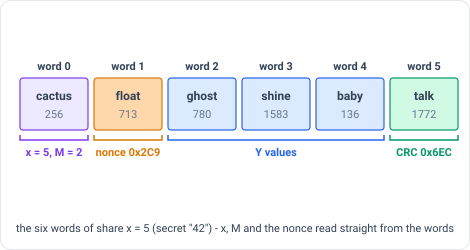
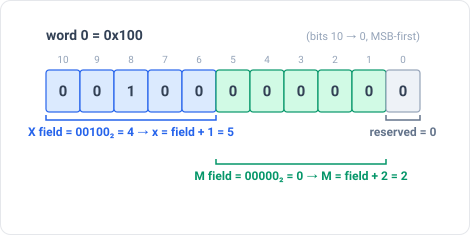
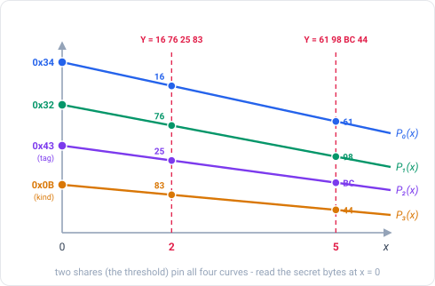
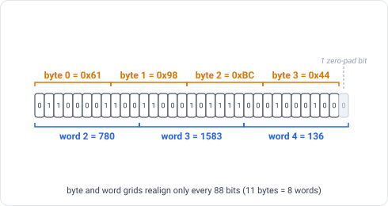
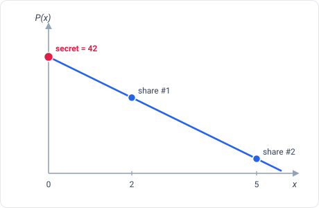

The share format
A chela share is nothing but a short header and a list of ordinary BIP-39 words - the same words a wallet seed uses. Everything needed to recover lives in those words; the header just restates, for humans, what the words already say. This page walks the format field by field, using one running example throughout: the text secret "42" split 2-of-3. It sits between the theory and the exact, byte-level SPEC.md - which is precise enough to write a compatible implementation in another language.
The header line
Each share is two lines of text: a dashed code, then the words. Our example's
x = 5 share looks like this:
CHELA-02C9-5-2-3-6
cactus float ghost shine baby talkThe code is a convenience, not a secret, and it only echoes what the words encode:
CHELA - 02C9 - 5 - 2 - 3 - 6
│ │ │ │ │
│ │ │ │ └ word count
│ │ │ └ total shares made (N)
│ │ └ shares needed to recover (M)
│ └ this share's coordinate (x)
└ recovery-set id (which split this share belongs to)Because all of that is inside the words too, a share still recovers if the header is smudged or torn off - chela reads the words and re-derives it.
A share, word by word
Each word is one of 2048 BIP-39 entries, so it stands for an 11-bit number (0-2047).
chela packs values into those words most-significant-bit first, in
four sections, and no byte ever straddles a section boundary - which keeps the layout
checkable by hand. A share is W words (W ≥ 4):
word 0 [ X:5 | M:5 | reserved:1 ] which share this is, and how many are needed
word 1 [ nonce:11 ] the recovery-set id (same on every share)
words 2 … W-2 [ Y values ] this share's piece of the secret
word W-1 [ CRC-11 ] a checksum that catches transcription errors
x = 5 share, grouped into the
four sections. The words alone carry x, M and the
recovery-set id; any printed label only repeats them.Word 0: x and M
The first word carries the two numbers recovery cannot run without: this share's own
number x, and the threshold M. Both are stored as offsets
(x − 1 and M − 2) so the illegal values literally cannot be
written down. Bits 10..6 are the x field, bits 5..1 the M
field, and bit 0 is reserved and must be 0.
x_field = x − 1 # x in 1..32 → 0..31 (x = 0 is the secret itself, never a share)
m_field = M − 2 # M in 2..32 → 0..30
word0 = (x_field << 6) | (m_field << 1)
For the example's x = 5, M = 2 share that is
word0 = 4 << 6 = 0x100 - the word cactus. A decoder rejects the
share if the reserved bit is set, or if the M field would decode above
the 32-share cap.

x = 5, M = 2 share. Storing X and
M as offsets means an out-of-range value can't be encoded at all.Word 1: the recovery-set id
Word 1 is a random 11-bit value drawn once per split and written identically into
every share of that split - a batch stamp. It lets recovery confirm the shares in
front of it belong together and refuse a mix of two unrelated splits. It is
not derived from the secret, so it leaks nothing about a low-entropy
payload, and re-splitting the same secret draws a fresh id. In the example the draw
was 0x2C9 - the word float - identical on all three shares.
The body words: the secret, split
The middle words carry this share's Y values - its points on the
curves from the theory. chela uses one curve per
byte of the body, all sharing the same x coordinates, with arithmetic
over GF(2⁸) (a 256-element field, one byte at a time, no carries between bytes).

x; one share alone reveals nothing about the values at x = 0.What actually gets split is not the bare secret but a small body:
body = payload ‖ integrity-tag (1 byte) ‖ kind-byte (1 byte)
The payload is the raw secret bytes. For our example the secret "42" is
0x34 0x32, the tag is 0x43, and the kind byte is
0x0B (Text), so the body is 34 32 43 0B. SSS turns those four
body bytes into four Y bytes per share (the x = 5 share's are
61 98 BC 44), which pack MSB-first, 11 bits at a time, into the body words.
Because 8-bit bytes and 11-bit words do not line up, the last word is zero-padded on
the right.

x = 5 share's Y = 61 98 BC 44 packed
MSB-first: four bytes fill two whole words plus part of a third, the leftover bit is
zero padding.The kind byte: what the secret is, and where it ends
The body's last byte names the payload type. Because it is split inside the body, a single share never reveals what kind of secret it is. It is always non-zero, and the packing pads with zero bits, so once a body is reconstructed the last non-zero byte is the kind byte - which is exactly how recovery pins down the true length despite the 8-vs-11-bit misalignment.
| kind byte | meaning |
|---|---|
0x01–0x05 | BIP-39 12 / 15 / 18 / 21 / 24 words (16-32 B entropy), no passphrase |
0x06–0x0A | BIP-39 12 / 15 / 18 / 21 / 24 words, with passphrase |
0x0B | Text (1-255 bytes of UTF-8) |
Any value outside this table is rejected. A BIP-39 mnemonic is interchangeable with its underlying entropy, so chela splits the compact entropy and re-derives the words on recovery; a passphrase, if present, is appended to the entropy as UTF-8.
The integrity tag: catching the wrong shares
The tag is one byte: the first byte of SHA-256(payload ‖ kind-byte). It
binds the whole secret. Combine shares from two different splits whose recovery-set
ids happened to collide (a 1-in-2048 chance), or otherwise reconstruct a body that
isn't the original, and the recovered tag won't match - so recovery fails
rather than handing back a plausible-looking wrong secret. It is checked in constant
time.
The last word: the checksum
The final word is an 11-bit CRC-11/UMTS checksum (generator
polynomial 0x307, no reflection, no final XOR) computed over the share's
decoded meaning - its x, M, the recovery-set id, and its
body bytes. An 11-bit CRC is guaranteed to catch any error confined to a single word,
and a mistyped word changes at most 11 adjacent bits, so a transcription slip is
rejected up front instead of feeding bad bytes into the math. For the example's
x = 5 share the CRC is 0x6EC - the word talk, the
sixth and last word.
Why the word count is slightly ambiguous
Because 8 (bits per byte) and 11 (bits per word) only realign every 88 bits, two body lengths that differ by one byte can pack into the same number of words. A single share on its own therefore can't be sure of its exact byte length - it is validated (does a candidate length's CRC match?) but not length-pinned. The authoritative length is decided across the whole set at recovery, using the kind-byte terminator.
How recovery rebuilds the secret
Given any M shares, a decoder accepts the bare word lists and:
1. Per share - decode word 0 (x, M), word 1 (nonce), the CRC word, and the body words;
reject a bad word, a set reserved bit, or a failing checksum.
2. Agree - every share must carry the same recovery-set id, the same M, and the
same body-word count; need M shares with distinct x (x = 0 is refused).
3. Rebuild - Lagrange-interpolate at x = 0, one byte at a time, to recover the body.
4. Terminate - the last non-zero byte is the kind byte; it fixes the true length.
5. Verify - recompute the integrity tag over the payload and kind; mismatch → reject.
x = 0 and read off the secret. chela does this once per body byte.
Fewer than M shares leave the body information-theoretically undetermined
- there is nothing to brute-force. The Lagrange weights and the field arithmetic are
in Why secret sharing; the exact bytes, the CRC
algorithm, the GF(2⁸) reduction polynomial, and full test vectors are in
SPEC.md.
The whole example
The text "42", split 2-of-3, produced the share
CHELA-02C9-5-2-3-6 / cactus float ghost shine baby talk: cactus
= word 0 (x = 5, M = 2), float = the recovery-set
id, ghost shine baby = the body (Y = 61 98 BC 44), and
talk = the CRC. The other two shares share float and differ
everywhere else; any two of the three rebuild "42". This and other
vectors are checkable in SPEC.md §8, and the
reasoning behind each file is in AUDITORS.md.